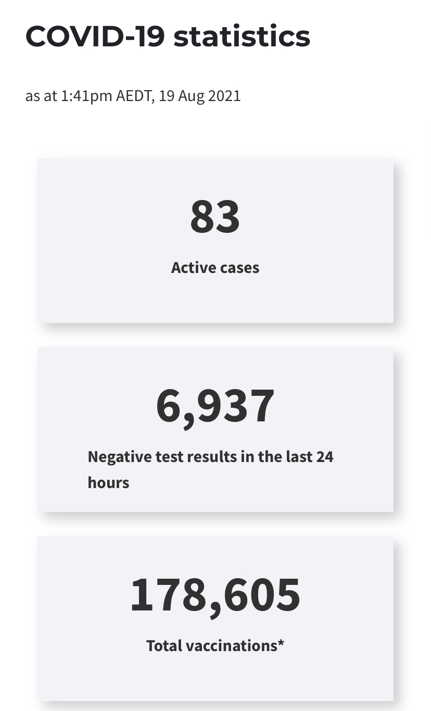

预防疫情 你我有责
澳大利亚海外留学生关爱中心，提醒在澳学子，疫情当下、不要浮躁，保护好自己。安心生活、努力学习。让“祖国放心，强国有我”这句名言，见诸行动！
堪培拉现在正处于疫情严峻时期，疫情期间大家多多保重，减少外出，stay safe
我们留学生关爱中心为大家组织了一场online的疫情防疫科普。
时间暂定为下周日(八月二十九日)下午两点。
由关爱中心顾问团队心理学专家 墨尔本市莫纳什市议员 罗丹女士 为我们普及防疫相关知识。
我们的平台为Zoom，我们届时会为大家提供账号和密码。
麻烦辛苦大家下载一下Zoom直播软件。
希望大家积极参与，让我们共同抗疫，早日战胜病毒，我们一起加油！
今日疫情通报
